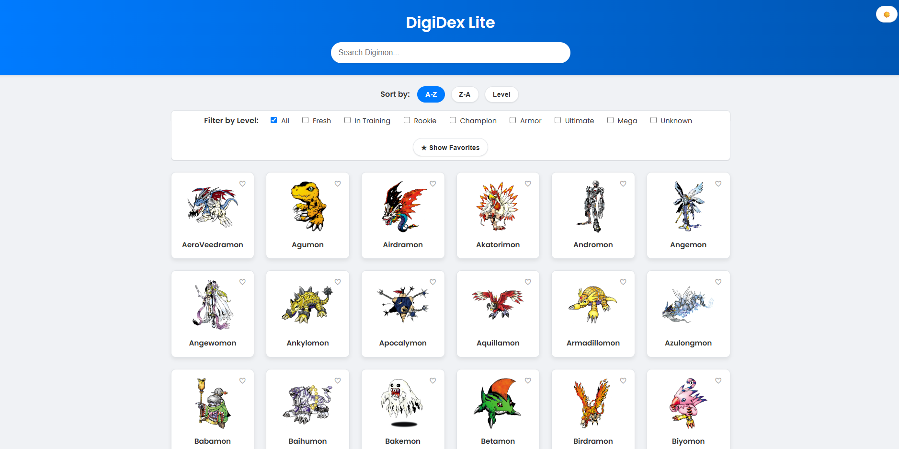

My Portfolio
Here's a collection of my work. Use the filters to navigate through different categories of projects I've developed.

DigiDex Lite
DigiDex Lite is a dynamic digital encyclopedia for Digimon, developed entirely with HTML, CSS, and JavaScript. The application connects to a public API to fetch and display creature data, allowing users to perform live searches, filter by evolutionary level, and sort the collection alphabetically. It also includes a key feature for users to save their favorite Digimon, creating a personalized Browse experience.

Malaysian Fuel Price Trend Analysis (2017-2025)
This project analyzes weekly Malaysian fuel price trends from 2017 to 2025 using Python, Pandas, and Matplotlib. The analysis involved cleaning and preparing raw time-series data to visualize the price evolution of RON95, RON97, and Diesel. The key insight from the analysis is the clear visual evidence of government policy impacting consumer prices, particularly the stabilization of the subsidized RON95 price ceiling in contrast to the market-driven volatility of RON97. The project successfully demonstrates skills in time-series analysis, data cleaning, and generating data-driven insights from public economic data.

Random Quotes Generator
This project is a complete full-stack application that displays random inspirational quotes. It features a decoupled architecture with a Node.js and Express backend API serving data from a JSON file to a responsive HTML, CSS, and vanilla JavaScript frontend. A key highlight is its modern DevOps pipeline, where the backend is containerized with Docker and both services are automatically deployed via a CI/CD integration with GitHub, Render, and Vercel.